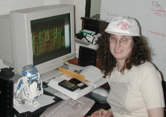
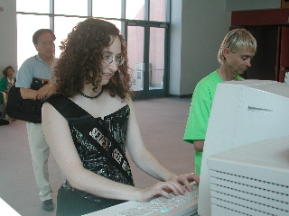
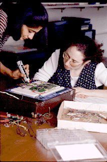

-
How do you define "geek"?
Geeks are intelligent, enthusiastic people full of curiosity
and passion.
-
Yeah, but would you want to marry one?
I am married to one. (So is my husband.)
-
How can you be a geek if you're in a relationship?
I don't equate geek with anti-social loser. Being good with
technology doesn't imply being inept at everything else. Technical
skill is not necessarily inversely correlated with social skill.
-
Wouldn't geeks rather interact with computers than with people?
Not this geek, and not any geek whom I have known (by
definition). If geeks didn't want to communicate with each other,
they wouldn't have created the Internet.
-
Yeah, but do you really want to be called a geek?
I'll admit I'm more comfortable with the term "nerd".
I think there's a coastal difference in connotations. On the East
Coast (where I went to school), nerd was positive and geek
was negative. On the West Coast (where I now live), the reverse
seems to be the case. I would be interested to know at what point
in the country the shift takes place.
-
On the East Coast, nerd is positive?
Well, at MIT we had the Nerd Pride movement. It was
deliberately modeled after the Gay Pride movement, where a
once-derogatory term was reclaimed.
Do you want my opinion on "nerd" vs. "geek"?
Yes, I do. I created a poll.
What are some of your geek credentials?
-
What sorts of things do you make your students do?
I make them build
computers from scratch (NAND gates) and program
them in ones and zeroes. I also teach them to count
in binary on their fingers.
-
You probably tell a lot of nerdy jokes, right?
Yes. For example, why do programmers confuse Christmas with
Halloween?
Because 31 OCT = 25 DEC.
-
Huh?
"OCT" means octal (base 8); "DEC" means
decimal (base 10).
-
That didn't help.
Read Computer Counting: The Magic of Binary, Octal, and Hexadecimal
-
How do I become a geek? Can I take a class from you?
Yes. Just attend
or cross-register
at Mills College. We have
students of all ages and a set of innovative
graduate programs for men and women with bachelor's degrees in
areas other than computer science who want to transition
into CS or interdisciplinary work. Students with no prior computer
education have gone on to top PhD programs in computer science
after completing (or even starting) our program.
|



|
{kind=link}
{kind=link}